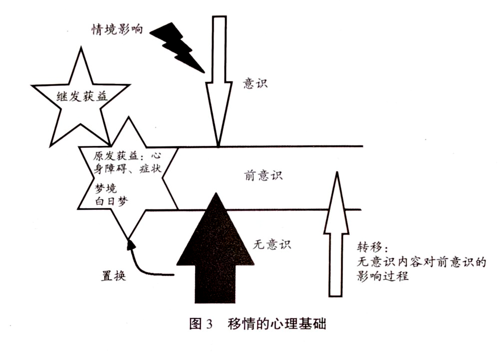
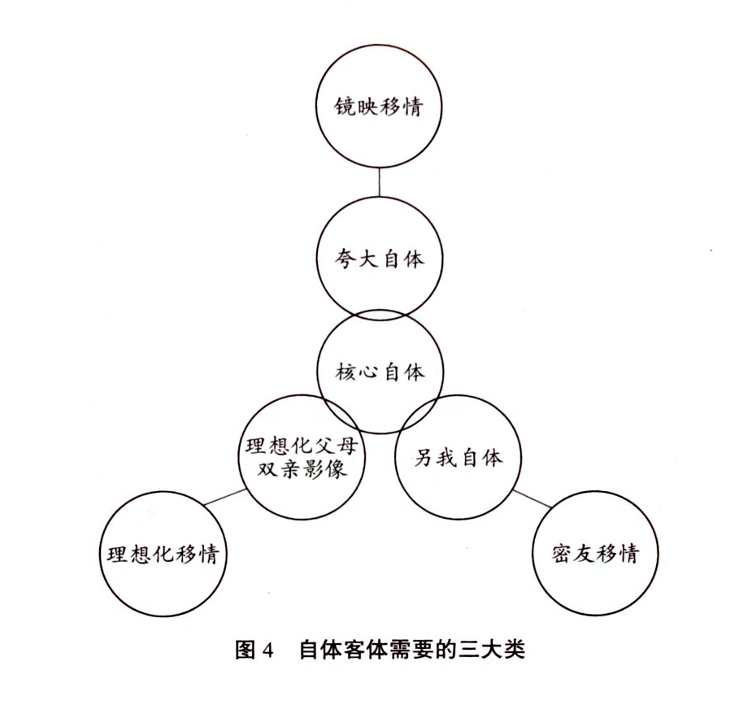

第六章 移情评估与个案概念化
什么是移情
我们通常所说的移情，是指在心理咨询或者精神分析的过程中，来访者把自己过去生活中的某种关系迁移到当下与咨询师的咨访关系中的现象。但科胡特认为，由于退行的原因，此类迁移现象只是某些移情的现象，并不代表移情本身。科胡特重申弗洛伊德的定义：从无意识向前意识的浮现过程称为移情。也就是说，被潜抑在无意识中的内容开始向前意识浮现的过程，就称为移情（西耶哥，2005）。
移情的这一定义源于弗洛伊德。弗洛伊德在其中期理论阶段把心理过程分为三个层次：意识、前意识和无意识（又译为潜意识）。他认为，意识是可被直接感知的心理部分；前意识介于意识和无意识之间，其内容在注意下可以进入意识；无意识是被潜抑的心理部分，即意识无法直接体验到的部分，只有通过梦境或者在自由联想过程中才能被觉察。弗洛伊德认为，无意识是精神分析的主要内容。在《梦的解析》（The Interpretation of Dreams, 1900）第七章中，弗洛伊德对无意识动力的描述可同时界定转移与移情两个概念：无意识表征不会直接进入意识，而是通过转移（Verschiebung，也译为“移置”）、凝缩等初级过程重塑前意识内容，突破审查机制，最终以梦、症状、移情神经症等变形形式被感知。在此定义下，移情（Übertragung）即是转移这一元心理机制在分析关系或日常关系中的无意识实现结果：一个人的欲望或某种需要因环境不允许，或因遭受创伤而被阻断并潜抑入无意识；这一被潜抑的需要并未消失，而是持续向上浮现至前意识层面，并在关系中以错位、重复、无意识的方式投注于另一客体，从而形成移情。
从词源学上讲，“Übertragung（移情）”一词的意思是“转移”或“搬运”，即将某物从一个地方携带到另一个地方，例如把一个房间里的东西搬到另一个房间。我们现在所说的“移情”实际上是指：被压抑或潜抑的东西蕴藏着一股生命力，它努力地向意识领域发展，这个努力指向前意识的过程，就是移情。
在移情发生的过程中，我们该怎么理解人际关系呢？被压抑的过程的确包含着人际关系的需要，但并非所有的需要都必然指向人际关系，也有可能存在其他一些需要。
后来科胡特指出：如果仅仅将移情理解为一种过去关系在当下的浮现，便是将移情狭窄化了；这种理解没有考虑到临床实践的丰富性，也丢失了移情概念的诸多内涵。在科胡特看来，所有被潜抑或压抑的欲望向前意识浮现的过程，即为移情。移情概念后来的发展，与北美精神分析学派（特别是人际关系学派）的发展有密切关联，但科胡特认为这一发展遗漏了关键的核心部分。他曾在著作中公开批评在美国流行的哈里·斯塔克·沙利文（Harry Stack Sullivan）的人际关系疗法对移情概念做出的过度狭窄化的定义。此外，被潜抑的移情内容可能会反复地尝试浮现。如果移情被压抑而无法浮现，它就会置换为症状表现出来。如果这些内容能够经过移情过程被成功整合至意识层面，就能带来真正的疗愈。
移情的形成
有这样一位来访者，她患有社交焦虑症，并有目光对视恐惧。她在治疗中说自己有一些不可告人的事情，问咨询师能不能开药。当她得知咨询师没有资格开药后，她说：“要不你给我介绍一位医生？”但是她并没有去看医生。这样反复了十几次之后，她对咨询师说，她的社交焦虑症是在她与前男友分手之后出现的。
她和前男友的恋爱关系持续了一年多，两人都觉得不合适，便决定分手。分手之后，她上班时总感觉有些不舒服，心里有点难过。她的脑海里总会突然浮现男女发生性关系的场景。这个场景一出现，她就觉得很羞耻、很不舒服。她努力把这个念头压抑下去，但过不了多久它又浮现出来，她就再次将其压抑。
这种情况与她当时的性心理发展有关系，失恋后在心中出现与性有关的念头本身是一种正常的性心理发展，但她过度执着于这个念头，同时又认为不应该有这样的念头。然而，她越不想有这个念头，这个念头就变得越强烈。
有一天她在单位办公的时候，这个念头又在脑海中浮现了。这时她碰巧和同事对视了一眼，而且同事冲她微笑了一下，于是她怀疑自己心里的念头被人看穿了。她立刻变得很紧张，开始担心别人会怎么看待她。这时她头脑中频繁出现的关于性的场景消失了，取而代之的是不敢和别人对视的心理。
她觉得心里的想法被别人看到了，感到十分羞耻。这种羞耻感让她很紧张。这种紧张心理逐渐泛化到她的生活中——不敢和别人对视。虽然这时她心里已经没有什么特别的想法了，但她还是很紧张，于是症状就形成了。
当她把这件事情说出来的时候，她觉得自己松了一口气，感觉说出来的一瞬间，心里压抑的东西全都消失了，连和别人对视的恐惧也消失了。这是被压抑的移情发生置换的一种现象，也是经由精神分析的过程，最终通过将移情内容进行意识化整合而实现疗愈的案例。
来访者的性心理、性欲望被压抑的时候，被压抑的念头实际上并没有消失，并且都想回到意识层面。她不停地压抑，这种想法又不停地影响前意识——这种浮现本身就是转移，进而出现在治疗关系中，被称为移情过程。
其实，移情过程一开始就具有自我疗愈的特点，它本身就是趋向整合至意识中的行为。但是在这个过程中，如果相关内容无法浮现，就只能置换为症状，比如目光对视恐惧。因为当来访者的注意力和焦虑集中在另一件事情上时，其面对性心理的焦虑就消失了、被置换了。此时，其焦虑表现为目光对视恐惧。
举例来说，假设在你听网课的时候，家人突然过来敲门，说有事要对你说。你回答说没时间，他便离开了，但过了一会儿又来敲门。这时你会觉得他影响了你。再次回绝他后，如果他再过来敲门，你就会非常愤怒，会想“你真烦人，为什么一直影响我”。
在这个例子中，那个想进来的人持续不断地想找你说事情，这一情形就如同被压抑的内容一直想进入意识的过程。你不断将其拒之门外，就如同反复压抑的过程。随着你不停地压抑，被压抑的东西就逐渐置换成令你烦恼的事情了。你看上去在听课，却不断受到打扰，最终导致听课质量大打折扣。这一过程类似于神经症的形成过程。你的生活虽然还可以继续，但变得不快乐了。为何会如此？这是因为你要用一部分精力来抵抗这些被压抑的内容，并逐渐将其置换为一种症状，从而只能以一种不太健康的状态继续生活。
无意识内容进入意识的过程，就好像在反复被打扰后，你最终问道：“你有什么事要对我说？”结果对方只是问你盐放在哪儿，你告诉了他，他的欲望得到了满足，你也就能安心听课了。这就是移情如何置换为症状、又如何致病，并最终被疗愈的过程。
移情的内容本质上是基于被潜抑的东西，是基于驱力的。按照当代自体心理学的观点，它基于自体客体的需要。当自体客体需要被压抑的时候，它不会消失，而是潜伏在无意识中，并在某些时期浮现出来。它浮现后若不被接受，就会置换为症状。因此，我们可以通过临床过程，让来访者获得一种安全感：让来访者进行自由联想，以减弱其一直以来的潜抑过程。当来访者置换到症状中的能量开始还原并回归原来的位置时，被潜抑的无意识能量，经由转移等初级过程机制传递至前意识；在分析情境或部分日常关系情境中，这一动力机制的具体实现形式，便是移情。
无意识的内容及其能量如同锅底之火，无法直接穿透类似锅底的边界进入前意识与意识，但会通过能量传导，使锅内的水和煮物——前意识中的词语、视觉、事物、身体等各类表征的日间残余——发生扭曲与变形，这一过程便是转移；这些被重塑的内容在生活与分析关系中显现出来，即形成移情（参见图 3）。

图 3 移情的心理基础（图内文字见〈附：图 3、图 4 图示文字〉）
被潜抑的移情内容，为什么会一而再、再而三地反复浮现呢？这个反复的过程实际上是由对生本能的潜抑所引起的。生本能被潜抑了，它就要延续自己、保持自己的完整性，所以要不停地浮现。在经典精神分析里，这个过程被称为强迫性重复。
自体客体移情
自体客体需要是自体发展中的一个关键要点。这个关键要点可分为三类：一是夸大自体的镜映自体客体需要；二是理想化父母双亲影像的理想化自体客体需要；三是密友自体（或称孪生自体）的密友自体客体需要（参见图 4）。

图 4 自体客体需要的三大类（图内文字见〈附：图 3、图 4 图示文字〉）
如果这三类需要在一个人的发展过程中被正常满足，则不会出现问题。但是如果出现了一些随机事件，比如父母养育不当、父母生病、家庭变故，或者个人生活中发生意外事件，导致三类自体客体需要中的某一类或某几类被阻断，无法表现出来，这些需要就会被压抑至无意识中。
如果被压抑的需要过于强烈，它便会置换为症状浮现。而在这种需要置换为症状并浮现的过程中，当事人会产生接受精神分析或者心理咨询的意愿。但咨询师要了解的是：一个人若存在发展性的需要（欲望），或者说一个人的自体客体需要具有发展性，那么他实际上是健康的。例如，孩子需要得到父母的回应，这是一种健康的需求，而且这种健康的需求对孩子大脑的发育以及自我认同感的整合都是有益的。理想化的发展需要同样是正常的，随着恰到好处的挫折的出现，它会逐步形成一些微结构，并慢慢地整合到自身的内部世界中。
然而，如果出现创伤性的打断，这种需要就会在形成微结构之前直接被压抑，成为一个问题的起点和根源。这也就是起源学意义上的根源，或称为病理学、病因学层面的根源。
我们认为发展性的欲望是健康的，但是在一个发展性的欲望被创伤等因素打断后，它就有可能成为症状形成的能量。在临床实践中，一个过去很多年被压抑的发展性需要，随着临床进程的推进被激活了，这个过程就是移情启动的过程。如果移情体现在一个人的生活中，我们就称其为症状。
移情并不仅是一种人际关系的切换，它本质上是被潜抑的内容重新被意识整合的一种生本能。在自体心理学中，我们将各类关系，特别是具有功能性的同频关系，理解为自体客体需要。这对个体而言十分重要。
自体客体移情出现的三重临床意义
自体客体需要若被潜抑，在未来的分析或咨询过程中，当自我筛查机制放松时，那些被潜抑的需要就会突然被激活，此时它们在临床中便呈现为移情现象，即自体客体移情。
科胡特提到了自体客体移情出现的三重临床意义。
第一重意义是评估意义，称作移情评估。移情评估直接指向起源问题，与症状评估和人格水平评估有所不同。症状评估仅能发现表层的症状；人格水平评估虽能确定一个人当下的人格状态，但无从知晓其问题起源所在；而移情评估则能深入挖掘症状背后的意义。科胡特格外重视移情评估，他认为这是精神分析评估中的根本性评估，是具有治疗性的评估，意义重大。因此，科胡特也将其称为起源学评估，类似于病因学评估。
第二重意义是临床的分析疗愈意义。科胡特认为，自体客体移情的出现，也代表着临床分析、诠释的工作和回应的意义。也就是说，自体客体移情的浮现除了具备评估意义外，还具有指导临床治疗的意义，它能够促使自体客体移情被意识化，进而被理解和接纳。这实际上是一个治疗性过程。
第三重意义，在临床中称为结案的意义。要了解一位来访者经由分析是否可以结案，首先应该观察的不是其症状是否消失，而是自体客体移情是否经由来访者自身的整合或者经由诠释而被意识化，使自体客体关系得以重建、被理解并被自我接纳。若如此，在结案的时候，你会发现来访者的移情已然消失，已被其意识所整合。
科胡特认为，自体客体移情的三重临床意义在临床工作中尤为重要。自体客体移情也是自体心理学，特别是经典自体心理学中十分重要的核心临床概念。
对自体客体移情的评估及理解
对自体客体移情的评估和理解不同于人格水平评估，是更深刻的、直接深入临床的评估。在运用自体心理学进行个案概念化时，自体客体移情是个案概念化的一个重要指标。
来访者出现某种临床表现的原因与其移情直接相关，而通过移情，我们可以追踪到症状的病理起源点。这就是自体心理学所认为的个案概念化。
例如，一位来访者在临床过程中，非常希望咨询师肯定其努力的作用。他经常说：“老师，你看我现在这样做是不是很好啊？是不是有进步了？”如果这样的现象在咨询的早期和中期出现，并且一而再、再而三地发生，这便是他试图得到咨询师肯定的表现。如果这种表现看似与其当下的实际生活没什么关联，我们就会倾向于认为这是一种镜映移情——镜映自体客体移情。
我们在面对这种镜映移情时，可以思考：镜映的需要与什么相关？它又与自体的哪个面向相关？实际上，这种需要与夸大自体的镜映需要相关。这种移情过程意味着，来访者早期夸大自体的发展过程可能遭遇了某种潜抑。
实际上，我们可以通过移情评估追踪来访者问题的真正病理起源点。这种评估方式与症状评估或人格水平评估完全不同，能够直接触及并追踪病理起源点。因此，自体心理学在进行移情评估时，正是在直接追踪病理起源点。虽然弗洛伊德和安娜·弗洛伊德也有类似的观点，但后来，许多精神分析教学渐渐遗忘了这一重点，而自体心理学则对这一点十分关注。
举例来说，一位来访者表现出很强烈的理想化移情过程，他对咨询师说：“老师，你是哪所学校毕业的？你那所学校一定很好。”或者说：“老师，你今天戴的这副金丝边眼镜，一般人戴看起来像黑社会的，但你戴着就特别好看。”这时，我们就可以去探究：他的理想化父母双亲影像中是否存在某种被潜抑的或断裂的内容。
在另一些例子中，来访者和咨询师之间产生了某种密友需要，即密友移情，比如两人就像闺密一样，聊衣服好不好看，聊读的书有没有意思，聊生活琐事等。这种行为的出现，往往表明密友移情正在发生。在咨询早期，这可能表明在来访者密友自体的位置上，隐藏了某种被潜抑的东西。
对自体客体移情的评估，也称为移情评估。移情评估可以帮助咨询师建立对来访者的个案概念化。
例如，一位女性来访者一直对我有某种程度的理想化移情。她的这种理想化的强度是中等的，不是特别强烈。这位来访者的边界各方面功能较好，人格评估显示她没有太严重的症状，仅存在轻度的焦虑。她的移情表现更接近神经症人格水平的来访者。
随着咨询的推进，她对我的理想化移情有一些增强，但并没有到脱离现实的地步。我注意到她在生活中的某些表现可能与她的理想化移情有关。该来访者开始呈现她的问题。她是一位 30 岁的未婚女性，长期与其上司保持恋爱关系；对方是已婚人士，且认为他们两人不可能有未来，但两人的关系并未结束。
经由她对我的理想化移情过程，我开始追踪并试图理解她的理想化移情背后的病理起源学的问题：对于这段没有结果的恋爱关系，她理智上虽然清楚应该结束，但情感上却做不到。这说明她在理想化早期的位置上存在某种缺失。在这个位置上，我初步形成了个案概念化，但尚无法确定她早期经历的事件，仅能推测她隐藏了一个理想化失败的过程。
在之后的咨询中，她逐渐透露了一些情况。（请注意，我们无法通过直接询问来访者来获取无意识内容。能够通过直接询问获取的都不是无意识内容，而是来访者加工好的内容。只有来访者在自由联想中自然呈现的内容，才是真正被潜抑的部分。）她父亲一直希望生个儿子，但是家里的三个孩子都是女儿。好在三个女儿都很有出息，虽然出生在农村，但都上了大学，这对农村家庭而言实属难得。但她父亲一方面觉得很好，一方面又下意识地表现出遗憾，时常因为没有儿子而唉声叹气。
作为三姐妹中最小的一个，她一直希望能够得到父亲的认可，但始终未能如愿。
因此，在与男性的关系中，一方面她渴望靠近男性，另一方面她对男性，特别是像父亲这样的男性，实际上存在一种着迷般的爱，希望让对方开心。当对方开心的时候，她就觉得自己是有价值的，是被别人接纳的。
在这个案例中，来访者的个案概念化与以下两方面有关：第一，她在对父亲的理想化过程中存在失败；第二，她在与父亲的关系中，对父亲有镜映的需要，但这一需要是被忽视的，因为父亲总是因为没有儿子而觉得丢脸。
因此，在这一案例中，结合来访者早期的联想，我们可以看到一些因果关系：她早期理想化的一些失败，以及其镜映需要的受挫，导致其自尊水平很低。这种低自尊使她不断寻求好的回应和被接纳的体验，从而在生活中下意识地陷入与上司的恋情。上司与她关系很紧密，类似父亲的角色（但这并不是对其早年父女关系的简单复制）。对方自她入职起就很关心她，给了她未能从父亲身上获得的感觉，从而形成了代偿。然而，这只能暂时满足她渴望被父亲认可的需要。
她的镜映移情源于夸大自体遭受的创伤、镜映需要的潜抑以及理想化需要的受挫，这导致她在关系中一直寻求代偿性的对象，比如她的上司。这件事一方面让她潜抑了部分体验，另一方面也代偿了部分体验，但同时给她的现实生活带来了许多困难。
她想找一位像父亲一样的男性作为伴侣，但在和她年龄相仿的男性中，要找到一个很成熟、各方面又都符合要求的人很困难。
个案概念化的过程需要围绕三类移情进行评估。移情评估是自体心理学的重要评估方法，它通过对自体客体移情的理解逐步形成。
一些当代自体心理学学者也对此做了研究。他们将各类自体客体移情与罗夏墨迹测验结合，利用罗夏墨迹测验对部分临床过程进行测试，发现移情现象在罗夏墨迹测验中会有清晰的反映。
这就是自体心理学的工作思路。如果要真正进入一段自体心理学的中长程深度治疗，临床移情评估十分关键。其关键性在于，它与一个人的病理起源的心理动力和成长的心理动力直接相关。
不同类型来访者的评估表现与评估难度各不相同。以垂直分裂的来访者为例，在一开始的时候，你往往较难观察到他的移情，因为他会把你远远地推开，但是你仍会看到他的一些特点。垂直分裂的来访者可能会表现出倨傲——高高在上地俯视你，并通过这种俯视将你推开；也有可能会拒绝你的靠近，或只是以自圆其说的自夸强调自己如何出色。
我曾经有一位来访者，他是一名音乐家。每次谈话时，他都会向我汇报他的情况，告诉我他有多么优秀。但在这些“优秀”之中，我感觉不到实质的内容。
于是我耐心地等待，在等待的过程中我开始注意到，虽然他不断强调自己有多么优秀，且他所说的“优秀”别人也都认可，但他很介意别人评论他的作品，并对此极为敏感。而且，他实际上看不起周围的一些人，还会对他们发表一些评论。从这些表现中，我可以看出他与周围的人情感很疏离，而且习惯于贬低他人。
像这样的来访者，就属于垂直分裂的结构。他的移情可能和镜映需要有关系，因为他看似高高在上，实则很在意别人的目光，却又不表现出对别人的需求——如果把这个部分表现出来，他会觉得丢脸。所以他把移情的部分隔离了，但移情现象还是有所呈现。
在面对一些垂直分裂的来访者时，我们可能需要接受督导，并尝试从多个视角去观察，慢慢理解来访者所表达的内容。要理解一个人本身就是十分困难的事，而理解一个垂直分裂的来访者，可能要花费一两年甚至更长的时间。
这类来访者前来接受咨询的情况相对较少。他们往往在生活遭遇混乱、面临无法处理的问题，或反复经受打击，且打击严重影响其生活时，才会来接受精神分析或者心理咨询。也有部分来访者因为抑郁而前来接受咨询。
附：图 3、图 4 图示文字
- 图 3 移情的心理基础（p.110）：
- 三条水平层级线自上而下：意识／前意识／无意识。
- 意识层：上方空心大箭头自上而下指向意识线，旁有闪电形箭头，标注「情境影响」。
- 前意识层左侧：上方大星形「继发获益」；下方星形「原发获益：心身障碍、症状／梦境／白日梦」。
- 无意识层：中央实心黑大箭头自下向上；左侧弯曲箭头「置换」指向星形下缘；右侧空心上箭头「转移：无意识内容对前意识的影响过程」。
- 图题：图 3 移情的心理基础。
- 图 4 自体客体需要的三大类（p.111）：
- 自上而下相扣的三圆：镜映移情 → 夸大自体 → 核心自体。
- 核心自体左下：理想化父母双亲影像 → 理想化移情。
- 核心自体右下：另我自体 → 密友移情。
- 图题：图 4 自体客体需要的三大类。
- 两图均按第一章、第四章体例裁出另存
images/，正文以相对路径引用，图内文字不与正文混排。